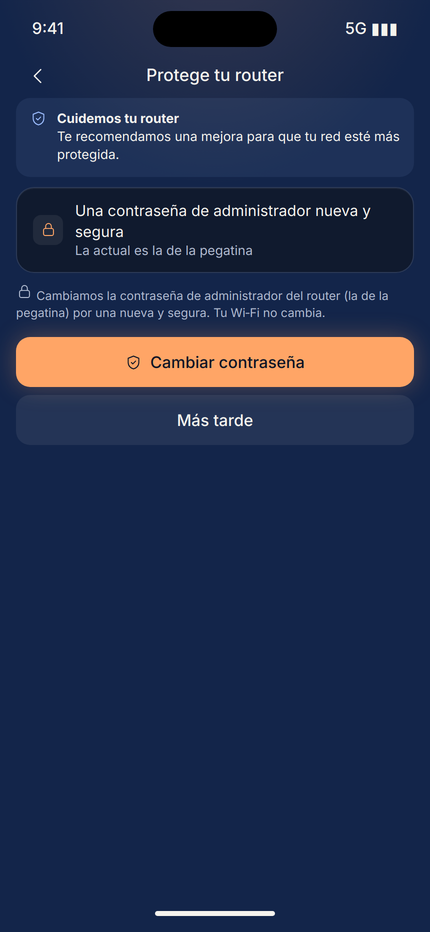
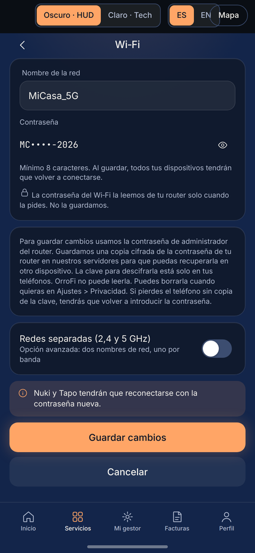
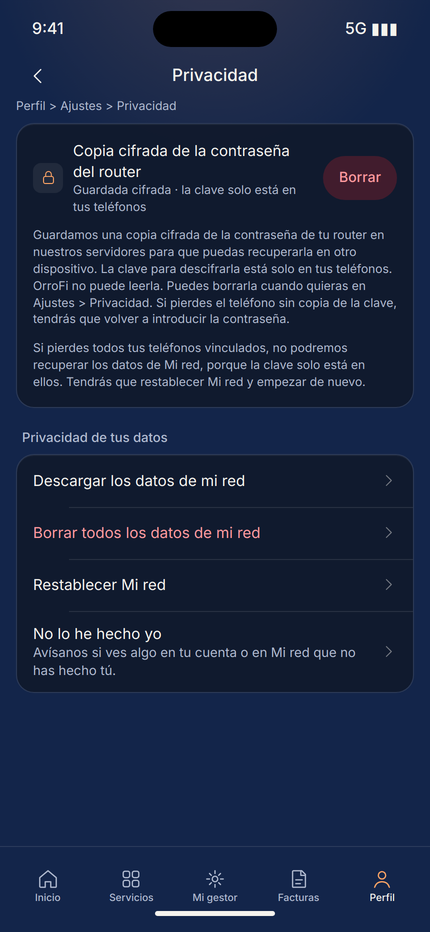
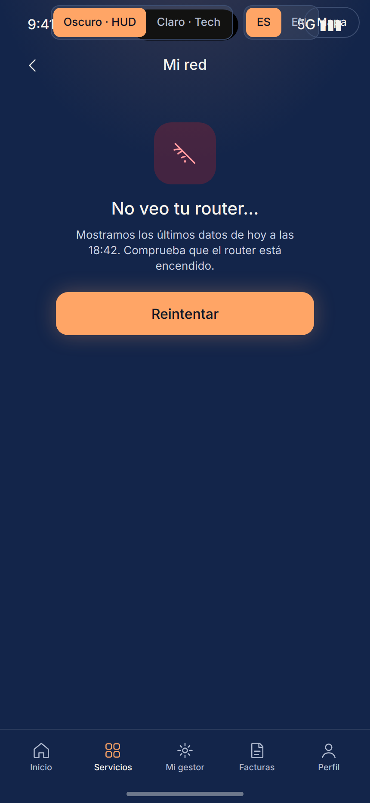
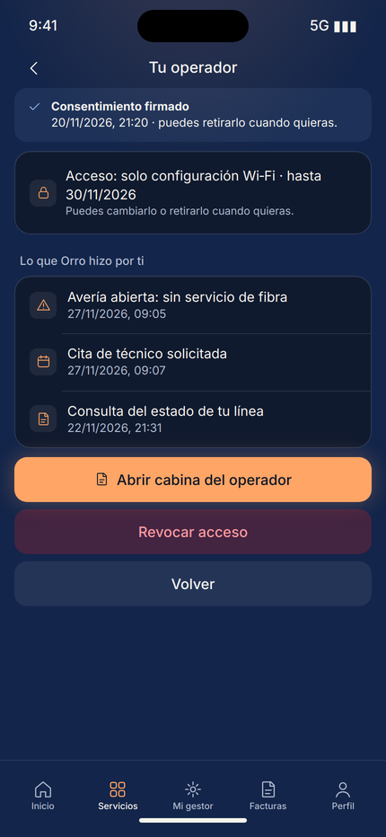
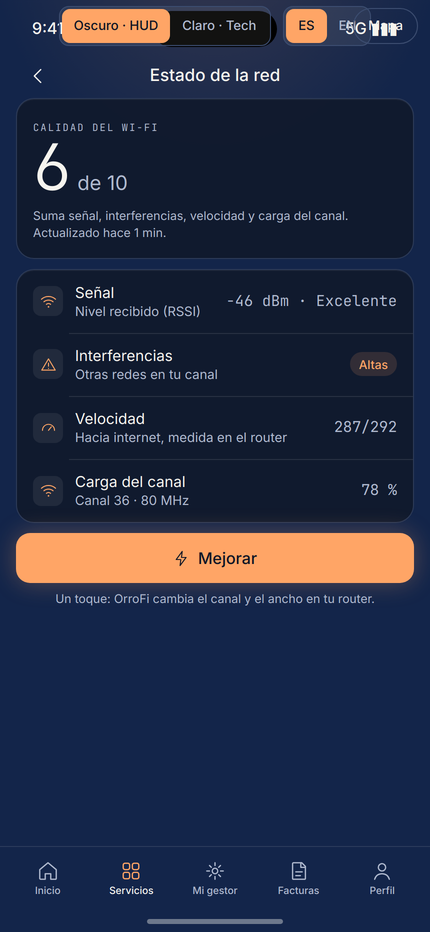
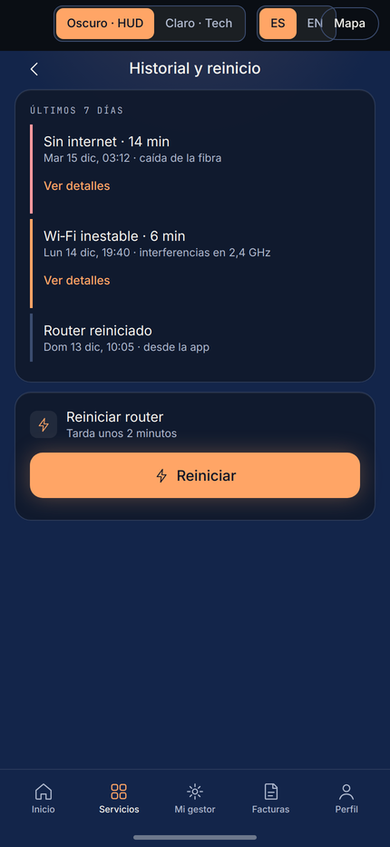

«Ваша сеть только для вас»
Объяснение защиты.

Домашняя сеть: роутер, устройства, гости, безопасность и диагностика.
Объяснение защиты.
Усиление защиты.

Готово.
Необязательный шаг.
Справка.
Старт доступа к локальной сети.
Как включить доступ в Настройках iOS.
Раздел открыт, но устройства не видны.
Пошаговое подключение.

Ввод пароля роутера.
Пароль защищён при передаче и хранении.
Ошибка ввода.
Успех.
Точка входа в раздел.
Объяснение, зачем iOS-разрешение. Пароль защищён при передаче и хранении.
Имя сети и пароль (показ по Face ID).

Статус защиты сети.

Системное подтверждение.
Изолированная сеть для гостей (не «Wi‑Fi OrroFi»).

Копия ключа дома на этом телефоне.

Подтверждение удаления копии.
Роутер, качество канала, пауза, Wi‑Fi, гости, история, канал и соседи, семья, список устройств.

Состояние «смотрим сеть».
Роутер недоступен.

Домашняя сеть недоступна, пока вы не дома.
Связка с оператором, согласия.
После подтверждения.

Диагностика.

Идёт улучшение канала.
Что изменилось.
Диагностика недоступна вне дома.
Помехи и соседние сети.
Журнал и перезагрузка роутера.

Сеть пропадёт примерно на 2 минуты.
Временно остановить интернет.

Пояснение, что устройство будет отрезано.
Карточка устройства.

Появилось неизвестное устройство.